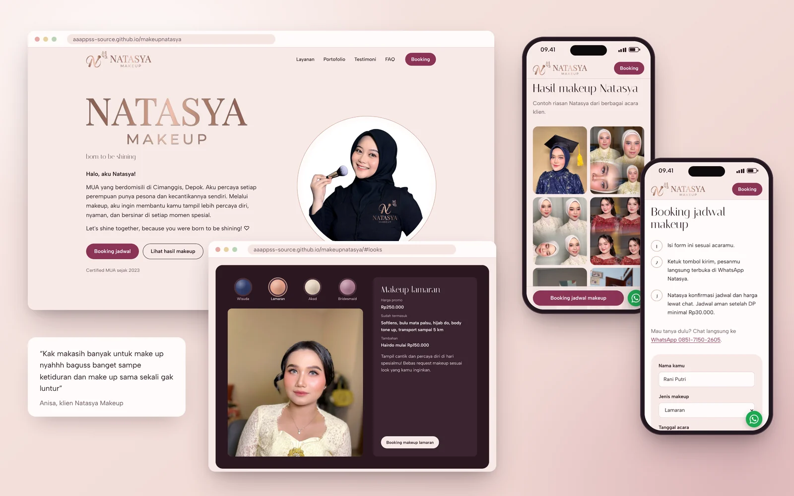

Natasya Makeup
Website makeup artist di Depok, proyek klien yang sudah online
Calon klien bisa melihat hasil makeup, memilih look untuk acaranya, lalu booking lewat formulir yang langsung membuka WhatsApp Natasya. Setiap booking otomatis tercatat di Google Spreadsheet, dan Natasya bisa mengganti foto serta testimoni sendiri dari spreadsheet tanpa menyentuh kode.
- Cocok untuk
- Jasa yang bekerja dengan jadwal, seperti MUA, fotografer, atau penyewaan, yang ingin data booking rapi tanpa merekap chat satu per satu.
- Fitur
- Galeri foto yang bisa diperbesar, formulir booking ke WhatsApp, rekap booking otomatis di spreadsheet, foto dan testimoni diganti lewat spreadsheet.